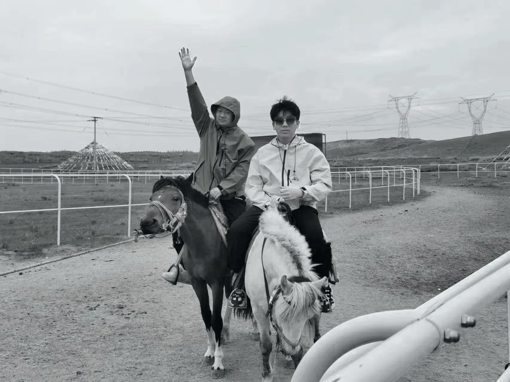

Blender · Cinema 4D · After Effects
产品可视化、IP 角色、场景建模、材质灯光与动态合成

01 / Profile
你好，我是温一帆，一名数字媒体艺术专业的视觉创作者。我在平面系统、三维空间与动态叙事之间工作，希望让概念不只停在画面里，而是成为可被理解、进入和记住的体验。
我相信，好的视觉设计不只是悦目的形式，更是精准的沟通与情感的共鸣。面对不同媒介，我会先确认问题与受众，再决定结构、材质、运动和技术。
02 / Method
方法是一条连续链路，不是软件列表。每一步都为下一步减少模糊，让视觉系统在平面、空间与时间里保持同一个判断。
先识别传播场景、受众与交付限制，再建立内容优先级，避免形式先于问题。
Context · Audience · Brief把核心概念组织为识别、版式、色彩和图像规则，让每一种触点都能被同一逻辑解释。
Identity · Typography · Image通过建模、材质、灯光、镜头与动态节奏，让视觉从静态识别扩展为可进入的空间和时间。
3D · Motion · Interaction根据真实媒介整理尺寸、语言、格式与生产文件，保证概念在传播和落地阶段仍然成立。
Adaptation · Output · Production03 / Experience
经历按可核实的时间与职责整理。团队项目明确个人贡献，商业项目不公开敏感信息。
本科，GPA 3.5 / 4.0。课程覆盖动态图形设计、三维模型基础、UI 设计、数据可视化、包装设计、计算机色彩原理与平面设计。
参与学院组织工作与跨成员协作，在长期推进中训练任务拆解、沟通和交付节奏。
围绕“江口沉银”历史主题，独立完成主视觉与文创包装系统；以“西王赏功”金币为核心进行三维建模、材质渲染与香炉展示，项目入围官方最终评选。
Read case study负责品牌平面视觉、包装版式与三维主视觉，把产品建模、材质、灯光和户外传播连接为统一品牌世界。作品进入 Shortlisted 评选。
Read case study面向海外零售场景处理家纺、宠物用品与卫浴包装；在多颜色、多尺寸和多语种内容之间建立版式结构，并推进腰封、吊牌、洗标与印前文件。
Read case study04 / Toolkit
熟练度采用工作语境描述，不用虚构百分比。
产品可视化、IP 角色、场景建模、材质灯光与动态合成
品牌识别、商业包装、主视觉、版式与界面设计
概念探索、纹理生成与交互视觉原型
视频剪辑、调色与音频基础处理
05 / Proof
06 / Contact